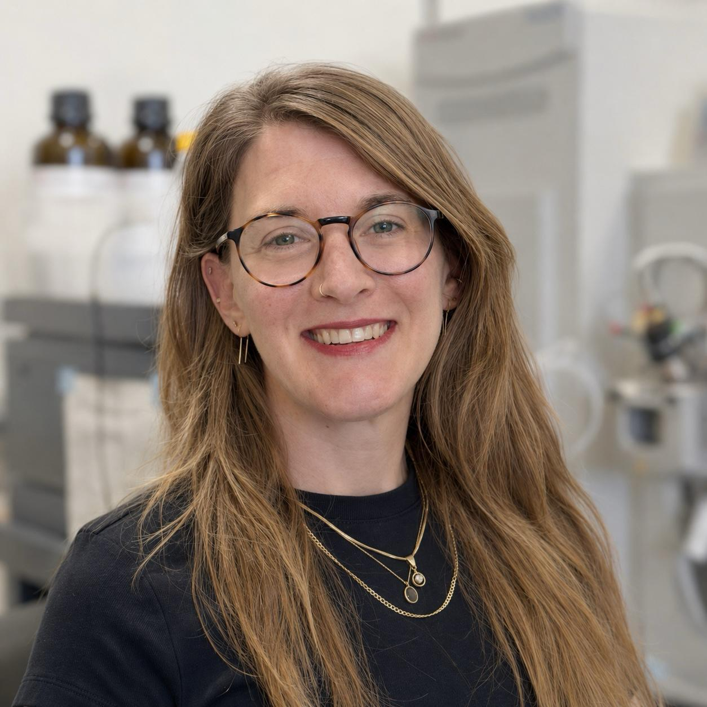

Aging biology, molecular interactions, and proteomics
Understanding how cells age through the lens of protein complexes.
The Doron-Mandel Lab studies how protein assembly, modification, and turnover shape protein homeostasis and quality control across aging.
Conceptual illustration, not experimental data
Research statement
Beyond Protein Abundance
Much of biology asks when, where, and how much of a protein is expressed. But proteins with the same sequence and abundance can exist in very different molecular forms. They can be free or assembled into complexes, interact with different partners, bind RNA, carry different post-translational modifications, and have different lifetimes.
We think of these different assembly states as distinct functional forms of a protein. Just as different transcript or protein isoforms can perform distinct functions, the same protein can occupy different molecular states with different biological roles and regulation.
Our lab uses protein assembly states as a lens for discovering biology. Rather than asking only whether a protein changes in abundance, we ask how it moves between molecular states, and what these transitions reveal about its function, regulation, and fate. We develop and apply quantitative mass spectrometry-based proteomic approaches to study these states at scale, with a particular interest in how their regulation changes with age.
Three research directions
Assembly states dynamics, modification, and turnover.
DYNAMICS
Dynamic assembly states
How do protein assembly-state dynamics change with age?
We study how protein interaction networks reorganize during stress and recovery, and how these responses differ between young and old cells.
Explore →MODIFICATION
Phosphorylation & RBP–RNA interactions
How does phosphorylation reshape protein–RNA interactions?
We develop proteomic approaches to uncover how signaling-driven modifications regulate RNA binding proteins (RBPs) assembly states and RNA binding.
Explore →TURNOVER
Assembly states & protein lifetime
How does a protein’s assembly state shape its lifetime?
We study how protein assembly and turnover are interconnected, and how this relationship changes during aging.
Explore →Join us
The Doron-Mandel Lab is coming to the Department of Biological Sciences at Rutgers-Newark in January 2027.
We are looking for highly motivated, curious, and creative students, postdoctoral researchers, and research staff.
We welcome people from all scientific backgrounds. You do not need to arrive with expertise in proteomics or any particular technique, what matters most is curiosity, motivation, and a willingness to learn, think deeply, and work collaboratively.
If you are excited by the questions we ask, we would love to hear from you.
If possible, please include a short introduction, your current position or program, your research interests, why the lab is a good fit, and your CV.
Get in touch Ella.doron@rutgers.edu

Principal investigator
Ella Doron-Mandel, PhD
Assistant Professor of Biological Sciences at Rutgers University-Newark
I began my scientific training in neuroscience at Tel Aviv University and completed my MSc and PhD in Molecular Neurobiology with Mike Fainzilber at the Weizmann Institute of Science, where I studied RNA localization and molecular transport in neurons. I later joined Marko Jovanovic’s lab at Columbia University to expand into quantitative proteomics and systems-level biology, developing approaches to study protein assembly states, post-translational modifications, and turnover. Along the way, my work with Rob Singer at Albert Einstein College of Medicine brought me back to RNA biology from a new direction, combining proteomics and imaging to study the molecular organization of neuronal RNA granules.
My science is inherently collaborative and interdisciplinary, and I especially enjoy working at the intersections between fields, methods, and ways of thinking.
Research areasAging biology, proteomics, and molecular neuroscienceAffiliationSchool of Arts & Sciences-Newark
Funding
Support for our research
Current and future support for the lab’s research program.
Publications
Selected work
2025SEC-MX: an approach to systematically study the interplay between protein assembly states and phosphorylationNature Communications2026An integrated RNA-centric imaging and omics approach reveals distinct properties and composition of neuronal RNA granulesbioRxiv2025Cell-Type-Specific Protein Metabolic Labeling and Identification Using the Methionine Subrogate ANL in Cells Expressing a Mutant Methionyl-tRNA SynthetaseMethods in Molecular Biology2024Large-scale map of RNA-binding protein interactomes across the mRNA life cycleMolecular Cell2022A new monoclonal antibody enables BAR analysis of subcellular importin β1 interactomesMolecular & Cellular Proteomics2021The glycine arginine-rich domain of the RNA-binding protein nucleolin regulates its subcellular localizationThe EMBO Journal2016Nucleolin-mediated RNA localization regulates neuron growth and cycling cell sizeCell Reports